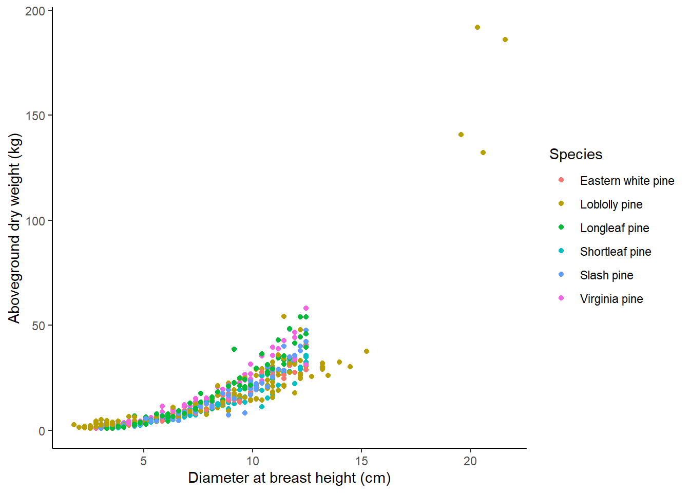
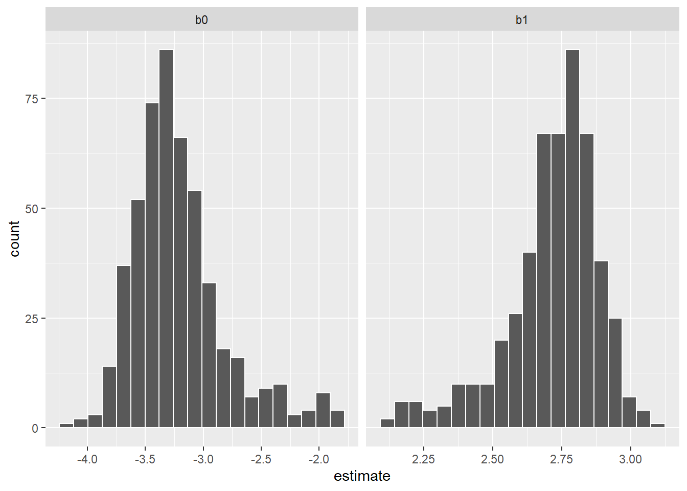
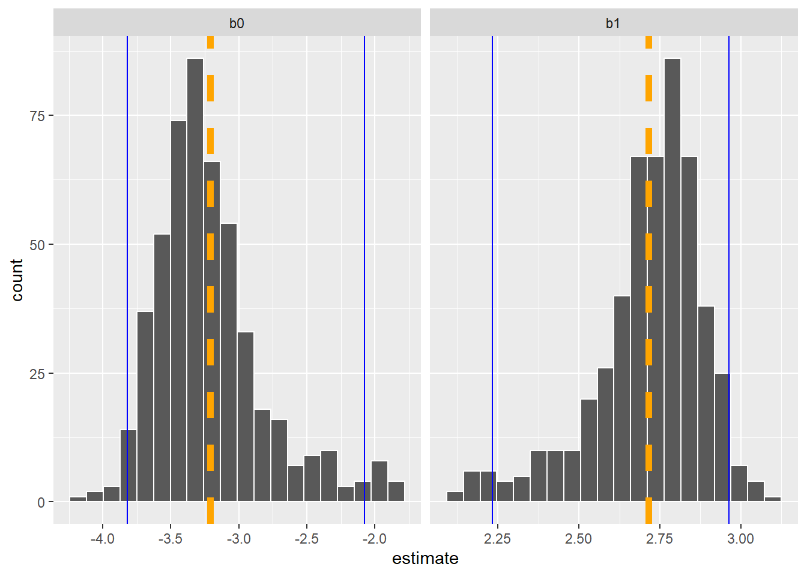
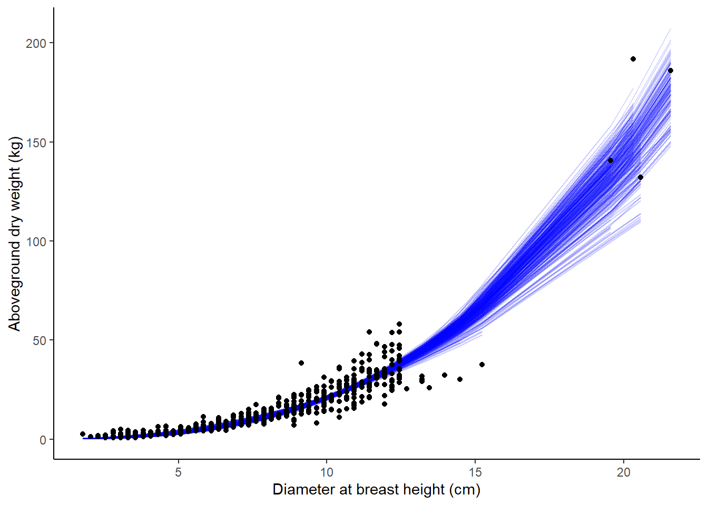
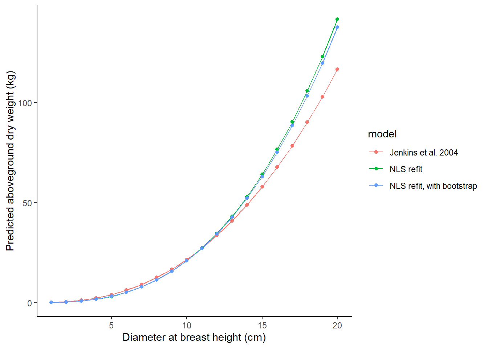

library(tidyverse)
In one of the first presentations I gave as a graduate student, I discussed a set of regression equations that fit a nonlinear model predicting a forest growth index for several species. As all graduate students do, I spent considerable time preparing my slides and practicing my talk. The presentation went well.
I used a data splitting approach in my analysis that I presented on, a common technique that trains a model on a large portion of the data (usually around 70%) then tests it on a smaller portion of data not used in model fitting (usually around 30%). After my presentation, a faculty member came up to me and asked, “You ever considered bootstrapping?”
Up to then, I think I learned about bootstrapping in half a lecture in one of my statistics courses. In my defense, there weren’t great tutorials on how to do bootstrapping in my own field of applied forest science, and statistical packages in software like R weren’t as common as they are today. That day, I learned that bootstrapping regression models could be a viable alternative to traditional regression approaches.
In a nutshell, bootstrapping is more computationally intensive but doesn’t rely on distribution assumptions (i.e., the assumption of errors that are normally distributed). It works well with data that are “messy” and in situations where only a small number of samples are available.
The general approach to bootstrapping a regression model is to (1) iteratively sample a subset of the data with replacement, (2) fit the regression model to each subset, and (3) output the regression coefficients from each subset so that you can visualize and interpret results.
In this tutorial, I use bootstrapping with with tidymodels package in R and apply it to estimating tree biomass for several species from the southern United States.
Tree biomass data
To begin, we’ll use many functions from the tidyverse package in R to work with the data:
The objective of this post is to fit a subsample of models that determine the aboveground biomass of trees using tree diameter as a predictor variable. I’ve gathered data from LegacyTreeData, an online repository of individual tree measurements such as volume, weight, and wood density.
I queried the database to provide all tree measurements for pine species the US State of Georgia. (You can find the raw data here, and I’ve previously written about these data.)
There are 566 observations from six species that contain a value for the tree’s diameter at breast height(ST_OB_D_BH; cm) and its aboveground dry weight (AG_DW; kg). In this data set, most trees are small in diameter and do not weigh a lot:
ggplot(tree, aes(ST_OB_D_BH, AG_DW, col = Species)) +
geom_point() +
labs(x = "Diameter at breast height (cm)",
y = "Aboveground dry weight (kg)") +
theme(panel.background = element_rect(fill = "NA"),
axis.line = element_line(color = "black"))
Here is a summary of the data we’ll use in the modeling exercise:
| Species | Num trees | Mean DBH | Max DBH | Min DBH | Mean weight | Max weight | Min weight |
|---|---|---|---|---|---|---|---|
| Loblolly pine | 186 | 7.9 | 21.6 | 1.8 | 16.8 | 191.8 | 0.8 |
| Shortleaf pine | 100 | 7.6 | 12.4 | 2.8 | 11.9 | 35.6 | 0.8 |
| Longleaf pine | 80 | 7.6 | 12.4 | 3.0 | 16.5 | 54.0 | 0.9 |
| Slash pine | 80 | 7.6 | 12.4 | 3.0 | 13.9 | 48.0 | 0.9 |
| Virginia pine | 80 | 7.7 | 12.4 | 2.5 | 17.1 | 58.1 | 1.0 |
| Eastern white pine | 40 | 7.5 | 12.4 | 2.5 | 12.5 | 30.7 | 1.0 |
Nonlinear regression model of tree biomass
From the previous graph and what we know about tree size-mass relationships, nonlinear equation forms work best. In this case, we’ll refit the classic Jenkins et al. tree biomass models using our the pine tree data. The model form is an exponential model which we’ll save in R as the bio_pred object.
With most nonlinear applications in R, we’ll also need to specify starting values for each coefficient. Here we’ll use the values for the pine species group from the Jenkins et al. publication and store them in the start_vals object:
bio_pred <- as.formula(AG_DW ~ exp(b0 + b1*log(ST_OB_D_BH)))
start_vals <- list(b0 = -2.5356, b1 = 2.4349)A classic use of these data would be to use the nls() function in R. Here’s how we can specify that:
m.bio <- nls(bio_pred,
start = start_vals,
data = tree)
summary(m.bio)
Formula: AG_DW ~ exp(b0 + b1 * log(ST_OB_D_BH))
Parameters:
Estimate Std. Error t value Pr(>|t|)
b0 -3.31397 0.08806 -37.63 <2e-16 ***
b1 2.75972 0.03339 82.65 <2e-16 ***
---
Signif. codes: 0 '***' 0.001 '**' 0.01 '*' 0.05 '.' 0.1 ' ' 1
Residual standard error: 5.657 on 564 degrees of freedom
Number of iterations to convergence: 4
Achieved convergence tolerance: 5.075e-06We can see that each coefficient has a small p-value. If we compare the size and magnitude of the coefficients to the ones presented in Jenkins et al., we see that they are similar, giving us some confidence in our analysis moving forward.
Bootstrapping regressions with tidymodels
The tidymodels package in R has a number of helpful tools for performing regressions and handling their output. The package draws from many useful functions from other packages like rsample and broom:
library(tidymodels)One helpful function is tidy(), which compiles regression output into a “tibble”, or a data set that can be used in subsequent analyses. I love this function because you can use the tibble that it creates by merging it to a new data set or visualizing the output:
tidy(m.bio)# A tibble: 2 × 5
term estimate std.error statistic p.value
<chr> <dbl> <dbl> <dbl> <dbl>
1 b0 -3.31 0.0881 -37.6 5.95e-156
2 b1 2.76 0.0334 82.7 2.28e-317Before we bootstrap, we’ll create a generic function to perform the subset of regressions:
fit_fx <- function(split){
nls(bio_pred, data = analysis(split), start = start_vals)
}The bootstraps() function from tidymodels performs the bootstrap resampling. We’ll ask it to resample from the tree data set a total of 500 times. We set apparent = TRUE to take one additional sample in the analysis, a requirement for some estimates that are produced after the sampling.
We use the map() function to create a data frame of modeling results, including the coefficients. This is stored in bio_boot:
set.seed(123)
bio_boot <-
bootstraps(tree, times = 500, apparent = TRUE) %>%
mutate(models = map(splits, ~ fit_fx(.x)),
coef_info = map(models, tidy))
bio_boot# Bootstrap sampling with apparent sample
# A tibble: 501 × 4
splits id models coef_info
<list> <chr> <list> <list>
1 <split [566/202]> Bootstrap001 <nls> <tibble [2 × 5]>
2 <split [566/208]> Bootstrap002 <nls> <tibble [2 × 5]>
3 <split [566/218]> Bootstrap003 <nls> <tibble [2 × 5]>
4 <split [566/200]> Bootstrap004 <nls> <tibble [2 × 5]>
5 <split [566/206]> Bootstrap005 <nls> <tibble [2 × 5]>
6 <split [566/206]> Bootstrap006 <nls> <tibble [2 × 5]>
7 <split [566/207]> Bootstrap007 <nls> <tibble [2 × 5]>
8 <split [566/211]> Bootstrap008 <nls> <tibble [2 × 5]>
9 <split [566/201]> Bootstrap009 <nls> <tibble [2 × 5]>
10 <split [566/220]> Bootstrap010 <nls> <tibble [2 × 5]>
# ℹ 491 more rowsIf we wanted to look at a specific sample (say samples 1 and 167), we could extract the output directly from bio_boot. Note the differences in the b0 and b1 coefficients between the two samples:
bio_boot$models[[1]]Nonlinear regression model
model: AG_DW ~ exp(b0 + b1 * log(ST_OB_D_BH))
data: analysis(split)
b0 b1
-3.505 2.848
residual sum-of-squares: 15302
Number of iterations to convergence: 6
Achieved convergence tolerance: 2.409e-06bio_boot$models[[167]]Nonlinear regression model
model: AG_DW ~ exp(b0 + b1 * log(ST_OB_D_BH))
data: analysis(split)
b0 b1
-3.139 2.682
residual sum-of-squares: 14350
Number of iterations to convergence: 3
Achieved convergence tolerance: 9.827e-06A more efficient way might be to extract the coefficients and store them in a data set named bio_coef:
bio_coef <-
bio_boot %>%
select(-splits) %>%
unnest(cols = c(coef_info)) %>%
select(id, term, estimate)
bio_coef# A tibble: 1,002 × 3
id term estimate
<chr> <chr> <dbl>
1 Bootstrap001 b0 -3.50
2 Bootstrap001 b1 2.85
3 Bootstrap002 b0 -3.27
4 Bootstrap002 b1 2.73
5 Bootstrap003 b0 -3.25
6 Bootstrap003 b1 2.73
7 Bootstrap004 b0 -3.27
8 Bootstrap004 b1 2.73
9 Bootstrap005 b0 -3.35
10 Bootstrap005 b1 2.79
# ℹ 992 more rowsThen, we can visualize the distribution in the coefficients from the 500 samples in the form of a histogram:
p.coef <- bio_coef %>%
ggplot(aes(x = estimate)) +
geom_histogram(bins = 20, col = "white") +
facet_wrap(~ term, scales = "free_x")
p.coef
While it’s helpful to visualize the distribution of coefficients, we also may want to quantify the key quantiles of them. The int_pctl() function calculates confidence intervals from bootstrap samples. Here are the lower and upper confidence interval values from the bootstrapped estimates:
pct_ints <- int_pctl(bio_boot, coef_info, alpha = 0.05)
pct_ints# A tibble: 2 × 6
term .lower .estimate .upper .alpha .method
<chr> <dbl> <dbl> <dbl> <dbl> <chr>
1 b0 -3.82 -3.21 -2.08 0.05 percentile
2 b1 2.23 2.72 2.96 0.05 percentileWe can add these values to our visualization to see that the upper and lower bounds (in blue) are not uniformly distributed around the mean estimate (in orange) for each coefficient:
p.coef +
geom_vline(data = pct_ints, aes(xintercept = .estimate),
col = "orange", linewidth = 2, linetype = "dashed") +
geom_vline(data = pct_ints, aes(xintercept = .lower),
col = "blue") +
geom_vline(data = pct_ints, aes(xintercept = .upper),
col = "blue")
Next, we can use the augment() function to obtain the fitted and residual values for each resampled data point. We’ll sample from 250 runs to limit some of our output:
boot_aug <-
bio_boot %>%
sample_n(250) %>%
mutate(augmented = map(models, augment)) %>%
unnest(augmented)
boot_aug# A tibble: 141,500 × 8
splits id models coef_info AG_DW ST_OB_D_BH .fitted .resid
<list> <chr> <list> <list> <dbl> <dbl> <dbl> <dbl>
1 <split [566/218]> Bootstr… <nls> <tibble> 12.1 6.86 7.32 4.74
2 <split [566/218]> Bootstr… <nls> <tibble> 0.862 3.05 0.763 0.0987
3 <split [566/218]> Bootstr… <nls> <tibble> 53.8 12.2 36.4 17.4
4 <split [566/218]> Bootstr… <nls> <tibble> 1.18 2.54 0.459 0.720
5 <split [566/218]> Bootstr… <nls> <tibble> 18.3 10.9 26.8 -8.53
6 <split [566/218]> Bootstr… <nls> <tibble> 8.66 6.86 7.32 1.34
7 <split [566/218]> Bootstr… <nls> <tibble> 20.9 11.4 30.4 -9.52
8 <split [566/218]> Bootstr… <nls> <tibble> 11.9 7.62 9.82 2.11
9 <split [566/218]> Bootstr… <nls> <tibble> 5.90 5.33 3.63 2.26
10 <split [566/218]> Bootstr… <nls> <tibble> 4.40 5.84 4.68 -0.283
# ℹ 141,490 more rowsThen, we can visualize how the resampling approach with bootstrapping results in varying relationships in predicting aboveground tree biomass based on tree diameter, with each bootstrapped model shown in blue:
ggplot(boot_aug, aes(x = ST_OB_D_BH, y = AG_DW )) +
geom_line(aes(y = .fitted, group = id), alpha = .2, col = "blue") +
geom_point() +
labs(x = "Diameter at breast height (cm)",
y = "Aboveground dry weight (kg)") +
theme(panel.background = element_rect(fill = "NA"),
axis.line = element_line(color = "black"))
Comparing biomass model predictions
Finally, we may be interested to see how the different models we’ve considered result in predictions of biomass. The tree_test object is a small data set that applies each of three predictions from the models we’ve considered:
- The original Jenkins et al. 2004 model for the pine species group,
- The nonlinear least squares model fit with parametric techniques (from the
m.bioobject), and - The NLS models fit with bootstrap estimates.
The AG_DW_pred variable stores the predicted biomass:
tree_test <- tibble(model = rep(c("Jenkins et al. 2004",
"NLS refit",
"NLS refit, with bootstrap"),
c(20, 20, 20)),
dbh = rep(seq(1, 20, by = 1), 3))
fx_AG_DW <- function(model, ST_OB_D_BH){
if(model == "Jenkins et al. 2004")
{AG_DW <- exp(-2.5356 + 2.4349*log(ST_OB_D_BH))}
else if(model == "NLS refit")
{AG_DW <- exp(-3.31397 + 2.75972*log(ST_OB_D_BH))}
else if(model == "NLS refit, with bootstrap")
{AG_DW <- exp(as.numeric(pct_ints[1,3]) +
as.numeric(pct_ints[2,3])*log(ST_OB_D_BH))}
else(AG_DW <- 0)
return(AG_DW = AG_DW)
}
tree_test$AG_DW_pred <- mapply(fx_AG_DW,
model = tree_test$model,
ST_OB_D_BH = tree_test$dbh)Then, we can plot the models to observe their differences. The original Jenkins et al. model underpredicts at larger diameters relative to the models that were refit to the data:
ggplot(tree_test, aes(x = dbh, y = AG_DW_pred, col = model)) +
geom_line() +
geom_point() +
labs(x = "Diameter at breast height (cm)",
y = "Predicted aboveground dry weight (kg)") +
theme(panel.background = element_rect(fill = "NA"),
axis.line = element_line(color = "black"))
Conclusion
Using bootstrapping to estimate regression coefficients has many benefits. It works well with a small number of observations and the analyst does not need to rely on distribution assumptions about the data and the resulting error terms. The tidymodels package makes performing bootstrap methods a breeze, and a variety of functions enable the analyst to visualize and interpret output from the bootstrap samples.
–
Special thanks to Julia Silge’s excellent tutorial on tidymodels that inspired this post, and the tidymodels page from Posit for helpful code.